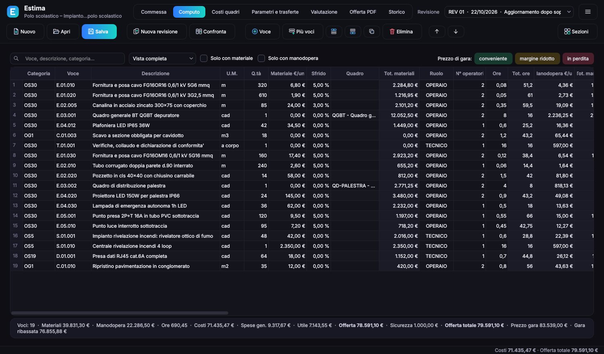
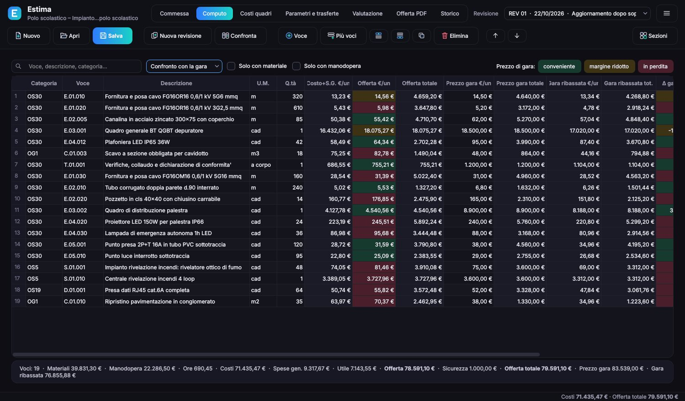
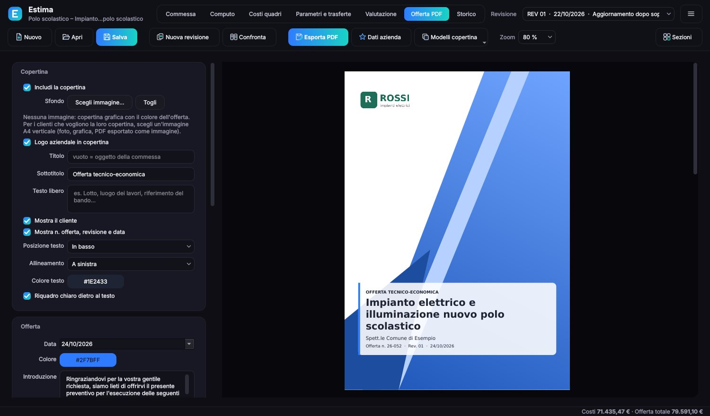
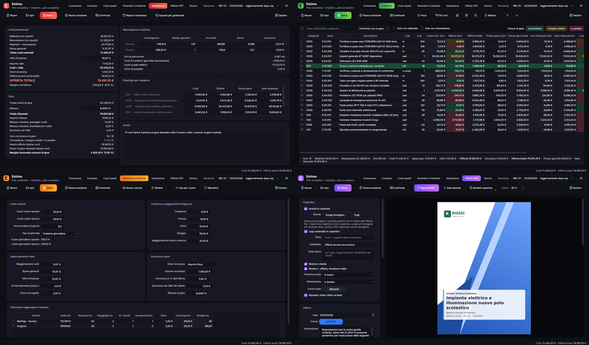

Estima è il programma per fare preventivi di impianti e lavori. Inserisci le voci, e costi di materiali, manodopera, quadri e trasferte si ricalcolano da soli. Confronti i prezzi di gara, tieni ogni revisione e mandi al cliente un'offerta in PDF con la tua copertina.

Estima fa i conti che oggi fai nel foglio Excel, ma senza formule da proteggere, macro da lanciare o colonne da nascondere. Cambi un valore e tutto il resto si aggiorna.
Per ogni voce materiale con sfrido, ore e operatori, spese generali e utile. Prezzo unitario arrotondato come vuoi tu, margine sempre in vista.
Cambi il costo orario, un prezzo o una quantità e computo, totali, riepiloghi e valutazione si aggiornano subito.
Listini di carpenterie, apparecchi e automazione con i tuoi sconti, materiale di consumo, giorni di cablaggio e trasporto. Il quadro si collega alla sua voce del computo.
Pasti, alloggio, lavoro notturno e i chilometri dei mezzi per raggiungere il cantiere, sommati al costo giornaliero di operai e tecnici.
Ogni nuova revisione blocca le precedenti con i loro parametri. Confronti due revisioni voce per voce e lo storico registra ogni modifica.
Un PDF interno con budget per voce e per categoria, manodopera, acquisti per fornitore e parametri. E un CSV con tutti i costi per il tuo gestionale.
Al primo avvio scegli cosa fai: Estima prepara le categorie di lavorazione giuste e accende solo le sezioni che ti servono. Quadri, trasferte e gare si attivano o si spengono quando vuoi.
Scrivi il prezzo di gara di ogni voce e il ribasso: Estima calcola i totali e li confronta con i tuoi costi.

Dal preventivo all'offerta da mandare al cliente in un clic. Nel PDF ci sono solo prezzi e importi, mai costi e margini.

Scegli i colori dell'interfaccia o lasciali prendere a Estima dal tuo logo. Li ritrovi anche nei report.

Quattro passaggi, dal computo del cliente alla commessa aperta.
Niente abbonamento: paghi una volta e Estima è tuo, con tutti gli aggiornamenti.
Per acquistare contatta il produttore: ti ricontattiamo con prezzo, fattura e indicazioni per il bonifico, e la licenza compare sullo stesso account Faro della prova. Più licenze, più aziende o un rivenditore? Scrivici dallo stesso modulo.
Le risposte rapide alle domande più comuni.
Per ora Estima è disponibile per Windows 10 e 11.
Sì, l'account Faro gratuito, lo stesso per tutte le app (Lumina compresa): con quello parte la prova e trovi la licenza quando la acquisti. Internet serve per accedere e ogni tanto per ricontrollare la licenza; per il resto Estima lavora anche offline e i preventivi restano nei tuoi file. Dettagli nell'informativa privacy.
Su tutti quelli che vuoi: in ufficio, sul portatile, a casa. Basta accedere con lo stesso account.
No. La licenza è perpetua e comprende tutti gli aggiornamenti, senza canoni.
Alla prima attivazione indichi ragione sociale e partita IVA: compaiono su tutte le offerte che prepari con Estima. Se cambi ragione sociale scrivici e la aggiorniamo.
No. Senza licenza Estima apre e mostra tutti i preventivi; per salvarli ed esportare l'offerta serve la licenza. Quando la acquisti con la stessa email premi «Aggiorna» e riparti da dove eri.
Sì. Scegli il tuo mestiere al primo avvio: Estima prepara le categorie adatte e spegne le sezioni che non servono, come i costi dei quadri.
No. L'offerta PDF contiene solo prezzi e importi. Costi e margini compaiono solo nel report interno, che riporta su ogni pagina la scritta «uso interno».
Sì. «Esporta per gestionale» crea un file CSV con una riga per voce e tutte le colonne di costo e ricavo: si apre in Excel e si importa nei gestionali.
Sì: dal computo, pulsante «Importa», da PriMus (file XPWE), Excel o CSV. Codici, descrizioni, quantità, unità di misura e categorie arrivano già compilati, e i prezzi del cliente vanno nel prezzo di gara, non nella tua offerta. Il PDF di PriMus non si legge: da PriMus esporta in XPWE o in Excel.
Sì: finché il programma non è firmato con un certificato, Windows avvisa per i programmi nuovi. Clicca «Ulteriori informazioni» e poi «Esegui comunque».
 Estima
Estima